The goal of this project is to leverage real-time urban data to help New York City government and community organizations identify community-level response to the Covid-19 epidemic within a low-income neighborhood disproportionately affected by the disease, using Brownsville, Brooklyn as the study case.
COVID-19 is a disease resulting from the SARS-CoV2 virus, which has reached pandemic status globally, according to the World Health Organization. Among cities greatly affected by this disease, New York City is at the forefront. Businesses have been forced to shut down, increasing unemployment rates while decreasing access to essential services for many New Yorkers. Social distancing and stay-at-home policies have been enforced, fundamentally changing the social behaviors of New Yorkers.
Using publicly available data sources, the team will analyze social and economic impacts of Covid-19 on Brownsville to help city government and organizations identify these issues. Factors including transportation, public sentiment dynamics, and environment will be assessed. In collaboration with the non-profit groups Civ:Lab and Public Sentiment, the project team will provide analyses and visualizations to identify and map the specific needs of Brownsville residents impacted by the Covid-19 crisis. Project deliverables will include a website and report detailing the research findings. An additional memo, summarizing the findings for policymakers, will also be provided.
All data our team used for this project were collected from NY Open Data, NYC Department of Health, US Census Bureau, Twitter and NYU CUSP.
The health data includes the COVID-19 related data, and health facilities data from New York State.
The 311 Data included all the requests and complaints of non-emergency municipal services.
MTA turnstile data counts entries and exits through the turnstiles for every subway station in New York City.
Twitter data includes the tweets related to COVID-19 across New York City during the pandemic period.
The census data includes demographic, economic and population data across Brooklyn.
Grocery stores, air quality, parks and Trees data were all used in this project.
Different methods were used in this project: cosine similarity, linear regression, temporal and spatial analysis, and sentiment analysis.
Cosine similarity, the cosine of the angle between two n-dimensional vectors in an n-dimensional space, is used to rank the most and least similar neighborhoods to Brownsville. The results of the cosine similarity inform which community boards will be compared to analyze the disparate impacts of Covid19 on different neighborhoods.
Ordinary Least Square (OLS) regression was used to determine the effects of urban factors on percent positive cases, rate of positive cases, and rate of death of Covid19 cases. The OLS regression was performed on three distinct categories of features to allow for better interpretability of features: occupation, transportation methods to work, and environmental, neighborhood factors. OLS regression allows for easily interpretable results and a means of comparison between the different features.
Temporal analysis focused on the period from March 1 to June 30 2020, compared against March 1 to June 30 2019 to see the impacts of Covid-19 on 311 and mobility. Spatial analysis used Geographic Information Systems (GIS) and geopandas to compare and contrast the disparities in environmental conditions and impacts of Covid-19 across Brooklyn neighborhoods. This included the percentage change in 311 service requests per zip code, the lowest level of granularity available.
Sentiment Analysis is used to see see how the public sentiment to COVID-19 changes over time. The sentiment threshold (0.3, 0.7) is set up to categorize each Tweet as positive, negative or neutral. A score between 0 and 0.3 indicates overall negative sentiment, between 0.3 and 0.7 indicates overall neutral sentiment, and above 0.7 indicates overall positive sentiment.
Between the dates of March 1 and June 30, comparing 2019 to 2020, there was an approximately 7% percent decrease in the number of 311 calls made in the neighborhood of Brownsville, Brooklyn. This is consistent (although to a smaller degree) with the wider trend of a call decrease in the entire borough of Brooklyn (~10%), as well as New York City (~18%). Choropleth maps indicate that Brownsville does not stand out in terms of percent decrease, as there is an overall decrease in 311 calls across Brooklyn.
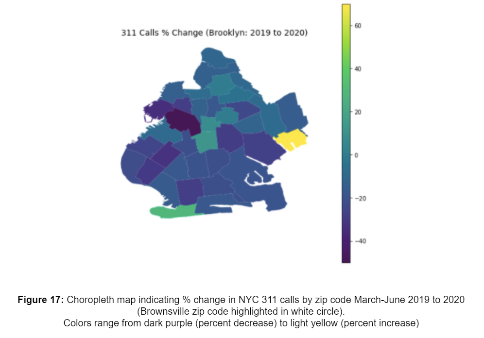
Time series analysis indicated that the trend of percent decrease in phone calls. Starting in June, however, the number of calls in 2020 increased quite drastically, correlated with the preponderance of fireworks throughout the city.
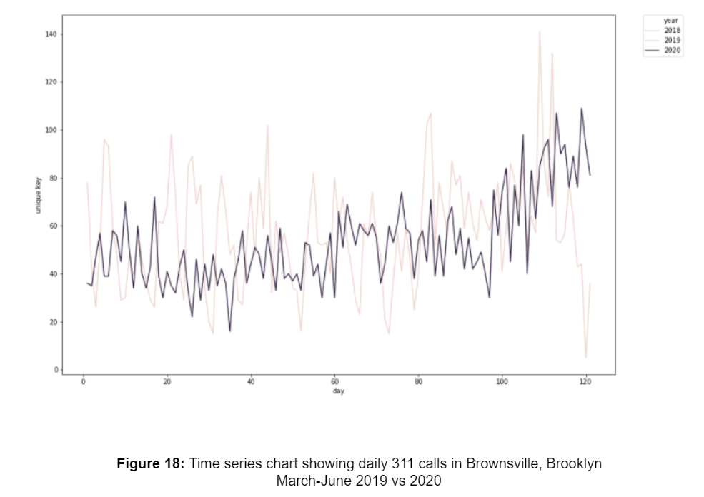
For Brownsville, distinct changes were observed in the complaint types, as well as the department meant to handle said calls. For 2019, the top call types included “Heat-Hot Water”, “Noise-Residential”, “Unsanitary Condition”, and “Plumbing”. For 2020, the number one call type was “Noise - Residential”, accounting for over 25% of calls. Additionally, there was the emergence of two new categories: “Non-Emergency Police Matter” (~15%), and “Illegal Fireworks”(~8%).
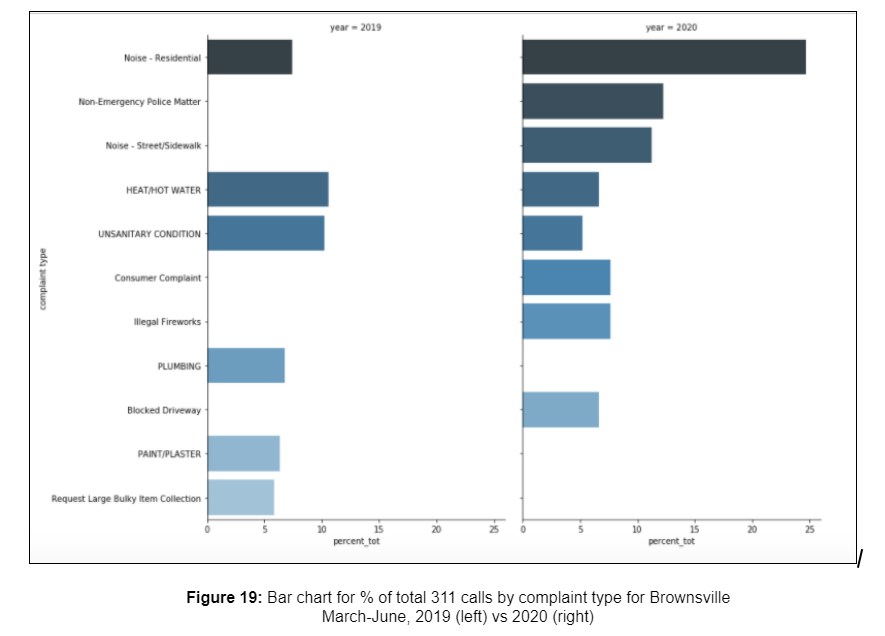
Noise complaints seem fairly self explanatory. The calling of police for non-emergency matters may be correlated with the rise in cases of Covid-19, as residents look to police departments for assistance with sick family members. Additionally, the spike in consumer complaints could potentially be correlated with the rise in “price gouging” among businesses for essential supplies.
These results also match the findings that the New York City Police Department (NYPD) responded to over 50% of all 311 calls in 2020 for the time period mentioned above. They were followed by the Department of Housing Preservation and Development (25%), and Consumer Affairs (7%).
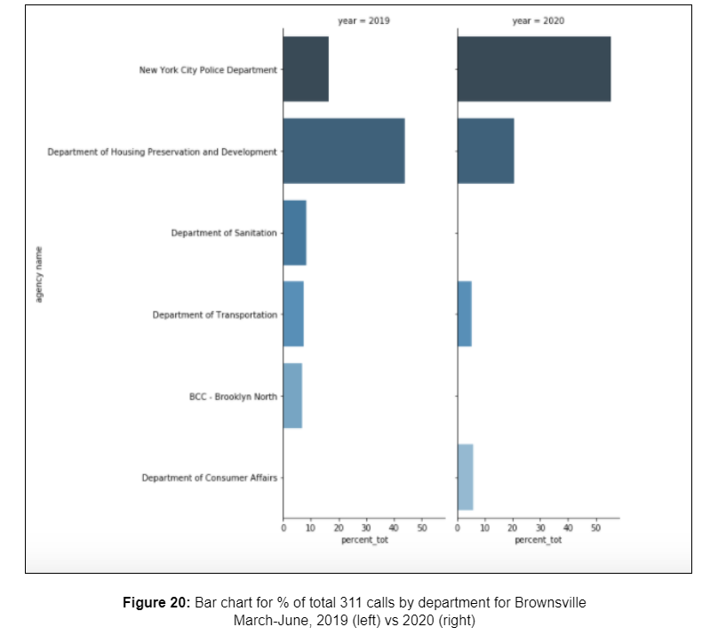
The geospatial visualizations reveal the disparities between Brooklyn neighborhoods and OLS regressions reveal the impact of different features on Covid19 cases. CD 16, which contains Brownsville, and CD 17, the community district most similar to CD16, have more cases, deaths, and greater percentage of positive tests than CD 6, the community district least similar to CD 16. The factors that are important to understanding these disparities are illustrated in the OLS regression results.
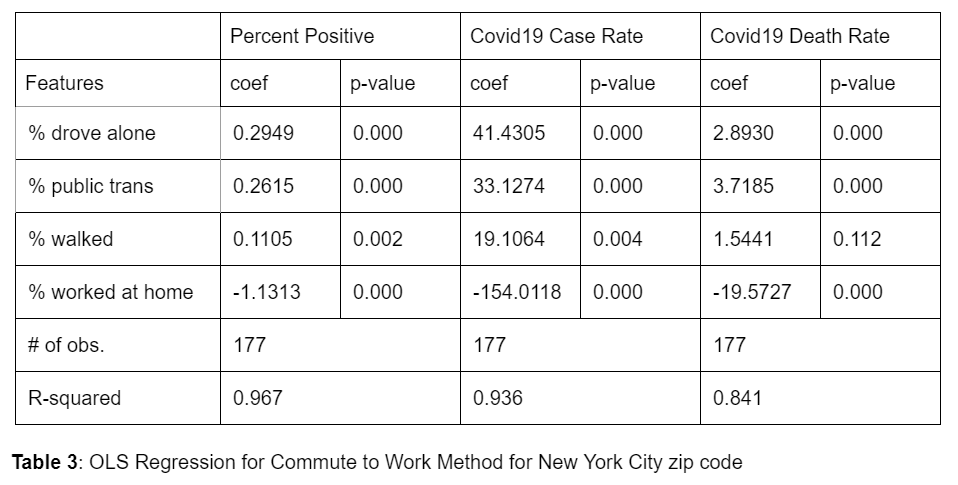
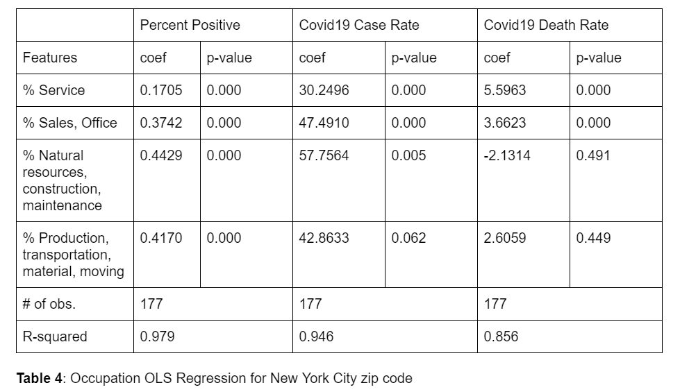
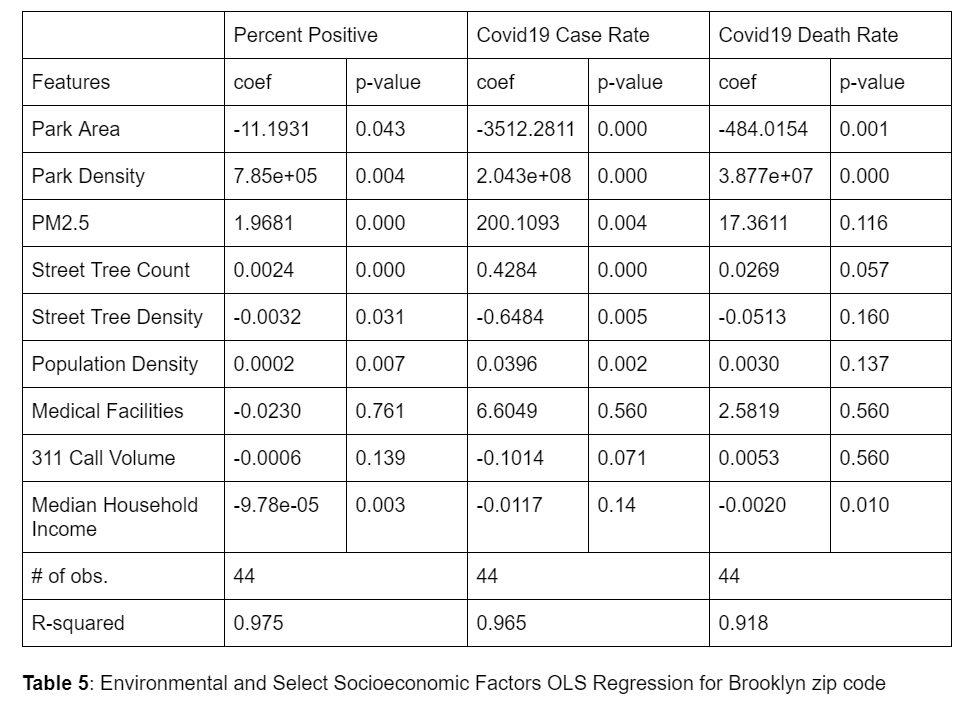
The transportation regression shows that working at home has a negative impact on all the analyzed features of Covid19 (percent positive, cases, and death rates), making it the most effective commute method to avoid Covid19. The occupation regression shows that service workers are least affected by Covid19, likely due to their status as non-essential workers. Essential workers like maintenance and transportation personnel show a higher chance of testing positive for Covid19. The environmental regression shows that median income of a neighborhood has an inverse relationship to the three features of Covid19 that were analyzed. Park space and density of trees also have inverse relationships to Covid19. Many of the environmental factors can be related to the wealth of the neighborhood, for example, wealthier neighborhoods have more access to parks, green space and medical facilities.
The transportation analysis for Brownsville shows two drastic decreases in ridership; one on the week of March 16, corresponding to public school closures, and the second one the following week, on the week of March 23, corresponding to stay-at-home orders.
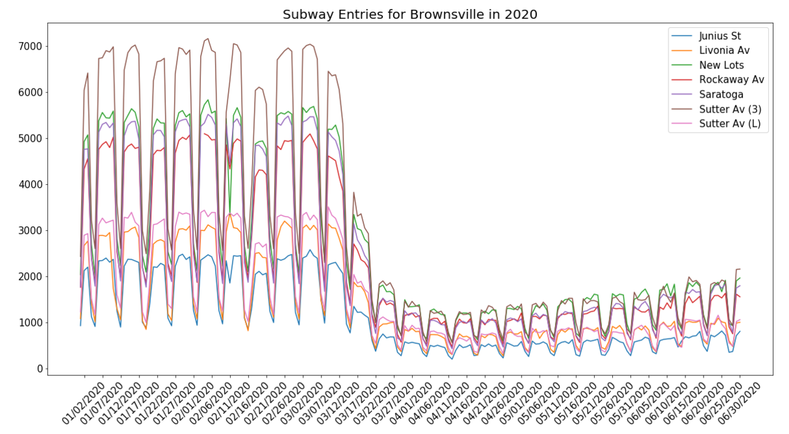
While the same decreasing trend can be observed in CD17 and CD6, the extent of decrease is different. The percent difference in ridership is quantified by comparing ridership of March to June 2020 against March to June 2019 for the three community boards shown in Table 7. CD16 and CD17, which are majority low-income, people of color communities, have similar COVID-19 cases and decreases in ridership, -51% and -55% respectively. This is in contrast to CD6 which has more affluent, white residents, significantly less COVID-19 cases, and a larger decrease in ridership of -70.5%.
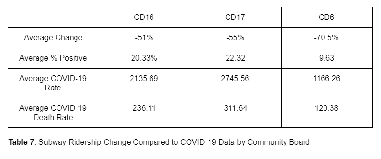
The results indicate that residents of low-income neighborhoods, who make up a large majority of essential workers, lack the ability to work at home and must rely on public transportation to get to work. The OLS results show that these occupations and reliance on public transportation put these residents at increased risk to COVID-19.
The trend of weekly number of tweets posted within Brooklyn was shown in Figure 26. Regarding the number of tweets, it shows that before the advent of the pandemic, there are less tweets posted. While entering into the 11th week, the number of tweets has a huge increase in the next two weeks and then decreases until 22th week. After 22th, the number of tweets increases again while NYC enters into the reopening phase. Figure 27 shows the correlation between the number of real infected cases and the number of tweets published each day. The observed positive trend for the correlation is confirmed by the coefficient equal to 0.315.
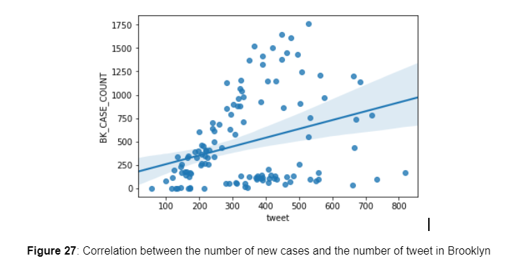
Figure 28 summarizes the number of top hashtags for Brooklyn. The hashtags related to search term such as #COVID-19, #COVID-19, #COVID, #Coronavirus and #Corona have been removed as these keywords served for data extractions. These top hashtags revealed some events or situations happening during the pandemic such as stay at home, quarantine, save the world, billionshields (a challenge that uses recycle empty soda bottles into face shields to against COVID-19) etc.
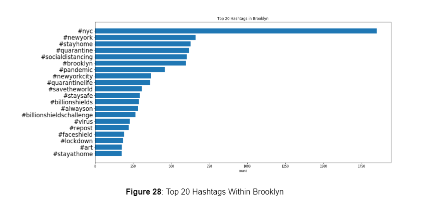
Figure 29 shows the 41% tweets are neutral, 27% show negative emotions and 32% shows positive emotions. Combined with the number of tweets, the Figure 30 shows the number of tweet trends by sentiment category during the 1H of 2020.
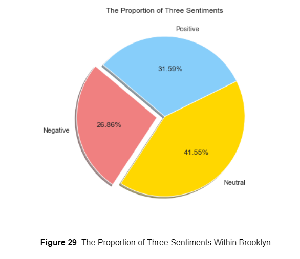
Based on word frequencies for positive tweets and negative tweets separately, word cloud for each of the two categories was drawn in Figure 31 and 32. The positive tweets contain positive words like “new york”, “great”, “thank” while the negative tweets are mainly expressing worries about people’s health, need and the virus trend.
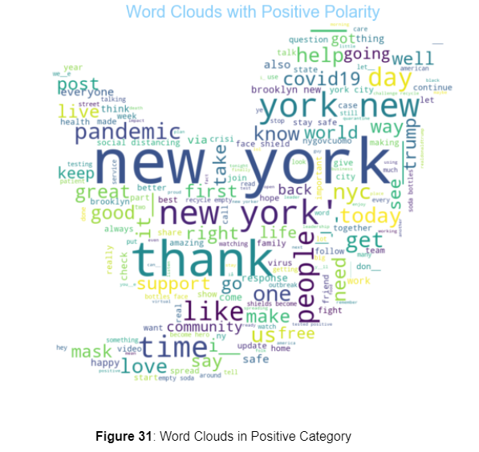 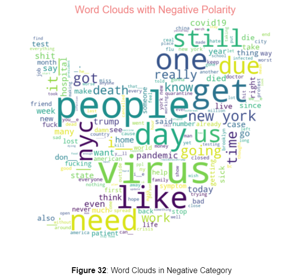
Figure 33, 34, 35, 36 represent the tweets analytical Insight of Brownsville. Though the amount of tweets is limited, the overall sentiment in Brownsville tends to be more positive.
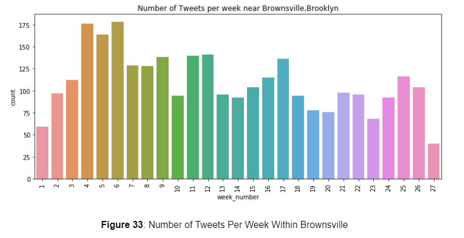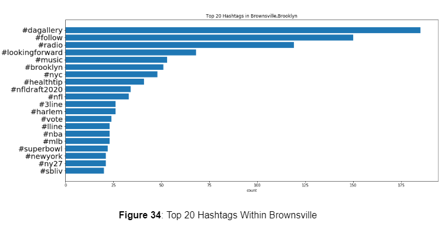
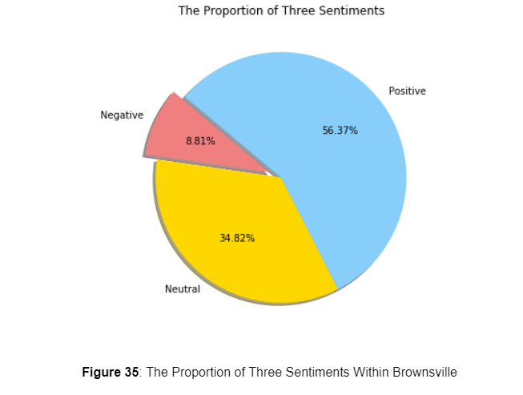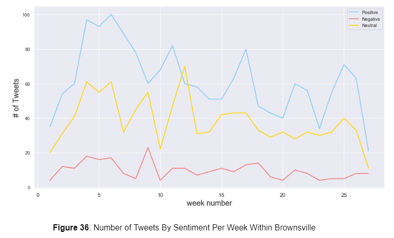
The results from this project supports many of the findings reported by the news and scientific community. Low-income communities of color are disproportionately affected by Covid-19, with more overall cases, more deaths, and a higher percentage of positive cases. The effects of Covid-19 are further exacerbated by transportation methods, occupations, and environmental factors like lack of access to green space and parks. Analysis of 311 shows a consistent trend of less use of government services, with residents shifting concern to noise and Covid-19 related issues.
Further research would entail studying 311 calls by time of day, and studying the content of each call for sentiment analysis and comparing it with Twitter data. For future Twitter data extraction improvements, the study can be focused on building a config based pipeline: a) crawl Twitter data by location/search-term two dimensions, b) after data collection, enable auto trigger the model evaluation and result forward. Furthermore, explore the possibility to construct the feedback loop based on the model evaluation results, which can drive crawlers to get more substantial data. Other avenues for future analysis can include economic data like regarding unemployment and small businesses.
Actions can be taken by individuals and the city to become more resilient to the effects of Covid-19. Individuals can follow CDC guidelines to wear masks and maintain social distancing. Employers should allow employees to work remotely and allow flexible work hours or staggered work schedules, only requiring employees to work in the office if necessary. The city can create more open, green space by expanding parks, opening streets for pedestrians, and planting more trees. Parks and sidewalks can be used as outdoor work spaces. The city can create a platform that allows citizens to voice their needs in real-time, allowing government agencies to plan and allocate resources for communities with reduced delays.